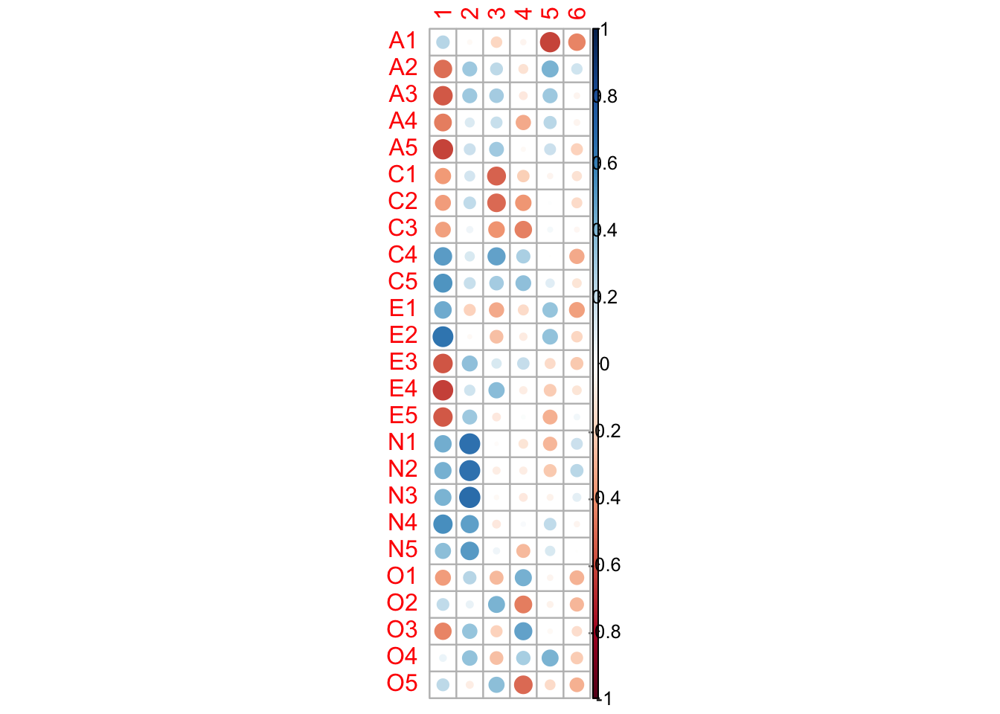
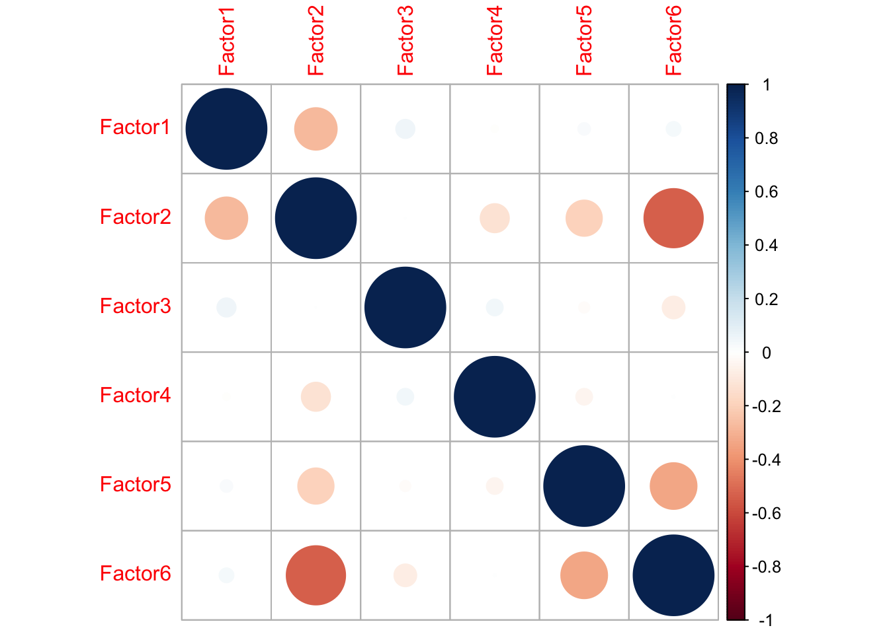
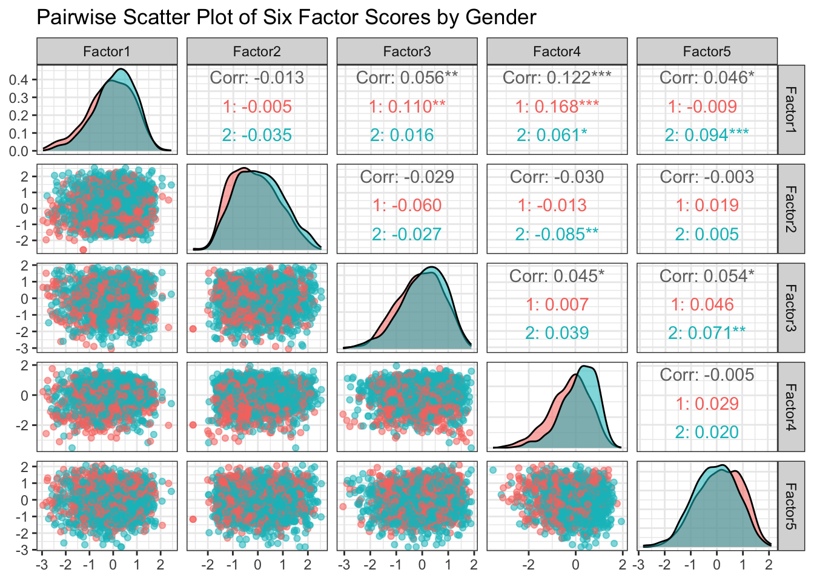

Imagine you’re a psychologist who has just created a new survey to measure “student engagement.” You’ve written 10 different questions, like
“How often do you participate in class discussions?”,
“How much time do you spend studying?”,
and “Do you find your courses interesting?”
After collecting responses, you notice that students who answer “often” to one question tend to answer similarly to a few others. It seems like your questions aren’t measuring 10 completely different things, but rather, they are tapping into a few underlying, unobservable traits.
This is the exact scenario where you would use Exploratory Factor Analysis.
Factor analysis is a statistical method used to uncover the latent structure (or “factors”) from a set of variables. There are two types of factor analysis: exploratory factor analysis (EFA) and confirmatory factor analysis. This course will focus on EFA.
7.1.1 Factor Analysis v.s. PCA: What’s the Difference?
PCA is a variance-focused technique with the goal to reduce dimensionality by creating a smaller set of components that capture maximum amount of total variance in the original data.
Factor analysis is a covariance-focused technique with the goal to explain the shared variance (covariance) among the original variables by modeling the underlying latent factors.
7.1.2 Spearman’s Exam Marks
Suppose we observe three exam scores for each student: Classics (X_1), French (X_2), and English (X_3). Researchers collect exam scores from many different students across these subjects and would like to investigate if what could affect students’ performances.
Research Question
Is there a single latent factor that drives students’ performance across different subjects?
Experimental Data
Historical reports give approximate correlations as follows:
Classics French English
Classics 1.00 0.83 0.78
French 0.83 1.00 0.67
English 0.78 0.67 1.00
Interpretation: The variables are strongly correlated—suggesting a single, latent “general ability” factor F that drives performance across subjects.
An Orthogonal One-Factor Model
Let \mathbf{z} = (z_1,\ldots,z_p)^\top be standardized variable of \mathbf{x}.
Let R=\text{Var}(z) denote the p\times p correlation matrix. An orthogonal one-factor model has the form \begin{equation*}
\mathbf{z} = L f + \boldsymbol \varepsilon,\\
\text{Var}(\varepsilon)=\boldsymbol \Psi=\text{diag}\{\psi_1,\ldots,\psi_p\},\quad
R = LL^\top + \boldsymbol \Psi.
\end{equation*}
f is called the common factor assumed with mean E(f)=0 and variance \text{Var}(f)=1.
L=[\ell_1, \ldots, \ell_p]^\top is the p\times 1 matrix of factor loadings.
\boldsymbol\varepsilon is a p-dimensional vector of measurement errors (also called specific factor).
h_i^2:= \ell_{i}^2 is called the communality of X_i and represents the variance explained by the factor f.
\psi_i=1-h_i^2 is called the uniqueness.
Given the correlation matrix only, we can use it to fit the one-factor model via R function factanal.
fit1 =factanal(factors =1, covmat = R)str(fit1)
List of 10
$ converged : logi TRUE
$ loadings : 'loadings' num [1:3, 1] 0.983 0.844 0.793
..- attr(*, "dimnames")=List of 2
.. ..$ : chr [1:3] "Classics" "French" "English"
.. ..$ : chr "Factor1"
$ uniquenesses: Named num [1:3] 0.0337 0.2871 0.3704
..- attr(*, "names")= chr [1:3] "Classics" "French" "English"
$ correlation : num [1:3, 1:3] 1 0.83 0.78 0.83 1 0.67 0.78 0.67 1
..- attr(*, "dimnames")=List of 2
.. ..$ : chr [1:3] "Classics" "French" "English"
.. ..$ : chr [1:3] "Classics" "French" "English"
$ criteria : Named num [1:3] 4.26e-12 1.20e+01 1.20e+01
..- attr(*, "names")= chr [1:3] "objective" "counts.function" "counts.gradient"
$ factors : num 1
$ dof : num 0
$ method : chr "mle"
$ n.obs : logi NA
$ call : language factanal(factors = 1, covmat = R)
- attr(*, "class")= chr "factanal"
Output interpretation:
loadings: a matrix of loadings with one column for each factor. The factors are in decreasing order of communality.
uniquenesses: a vector of estimated measurement error variances.
7.2 The Exploratory Factor Model
Example: bfi Data
Background: A classroom/teaching dataset for personality measurement under the Big Five model: Agreeableness (A), Conscientiousness (C), Extraversion (E), Neuroticism (N), and Openness (O). The bfi data is collected via the SAPA Project and is available from the R package psych.
25 items: 5 per trait, named A1-A5, C1-C5, E1-E5, N1-N5, O1-O5.
Before performing factor analysis, we need to ensure our data is suitable. Two common methods are introduced below.
Measure of Sampling Adequacy (MSA)
The first method is measure of sampling adequacy (MSA). MSA (Kaiser 1970, Psychometrica) is a statistic that measures the relative sizes of the pairwise correlations to the partial correlations between all pairs of variables:
MSA = 1- \frac{\sum_j \sum_{k \neq j} q_{jk}^2}{\sum_j \sum_{k \neq j} r_{jk}^2 }
r_{jk} is the marginal sample correlation between variables j and k;
q_{jk} is the partial correlation between the two variables after accounting for all other variables in the data;
MSA indicates the proportion of relationships in the data that is shared and common among groups of variables
A high MSA (close to 1) suggests that there are underlying factors influencing groups of variables and the dataset is suitable for factor analysis.
A low MSA (close to 0) suggestions that most of the correlations are just unique, one-on-one relationships that cannot be well explained by common factors.
The MSA can take on values between 0 and 1. Kaiser proposed the following guidelines for interpretation:
MSA Range
Interpretation
0.9 to 1.0
Marvelous
0.8 to 0.9
Meritorious
0.7 to 0.8
Middling
0.6 to 0.7
Mediocre
0.5 to 0.6
Miserable
0.0 to 0.5
Unacceptable
R Code: MSA
# compute measures of sampling adequacy (MSA)psych::KMO(dat)
Interpretation: The overall MSA is 0.85, which is “meritorious.” This confirms our data is appropriate for factor analysis.
Cronbach’s Alpha
The second method is called Cronbach’s alpha. For n samples of p-dimensional observations \mathbf{X}=(X_1, \ldots, X_p)^\top, Cronbach’s alpha is
\alpha = \frac{p \bar{r}}{1+(p-1)\bar{r}}
\bar{r} is the average correlation:
\bar{r} = \frac{\frac{1}{\frac{p(p-1)}{2}} \sum \sum_{i< j} \text{Cov}(X_i, X_j)}{\frac{1}{p}\sum_{i=1}^p \text{Var}(X_i)}
A high alpha value (close to 1) suggests that the items are all measuring the same underlying latent factor.
A low alpha value (close to 0) suggests that the items may be measuring different things.
R Code: Cronbach’s Alpha
summary(psych::alpha(dat, check.keys=TRUE))
Warning in psych::alpha(dat, check.keys = TRUE): Some items were negatively correlated with the first principal component and were automatically reversed.
This is indicated by a negative sign for the variable name.
Reliability analysis
raw_alpha std.alpha G6(smc) average_r S/N ase mean sd median_r
0.82 0.82 0.86 0.15 4.6 0.0054 4.2 0.61 0.13
7.4 How Many Factors Should Be Used?
This is one of the most crucial and perhaps subjective steps. We will introduce two common methods:
The first is to decide the number of factors, m, prior to the analysis using the idea from PCA.
The second is to use a formal likelihood ratio test.
7.4.1 Scree Plot for Choosing the Number of Factors
Prior to the analysis, one often needs to decide how many factors should be used. A good exploratory way is to use scree plot to decide m so that the contribution of each potential factor to the total variation is examined.
Scree Plot: We look for the “elbow” or point of inflection in the plot of eigenvalues of correlation matrix.
As seen from the scree pot, the cumulative eigenvalues do not increase too much and “elbow” point seem to occur at either 5 or 6; so we might want to try the factor model with m=6 factors.
The scree plot often gives somewhat subjective answers, so we might also try different number of factors, fit the factor analysis model for each selection and compare the results among all the choices.
7.4.2 Likelihood Ratio Test
A formal way to choose the number of factors is to use a likelihood ratio test.
Likelihood Ratio Test (LRT)
We wish to test whether the m factor model appropriately describes the correlations among the p variables.
Alternative hypothesis: the correlation matrix can be any positive definite matrix H_a: R_{p \times p} \text{ is a positive definite matrix}
The test statistic is
-2\ln \Lambda := \{n - 1 - (2p+4m+5)/6\} \log \frac{|\hat{L}\hat{L}' + \hat{\Psi}|}{|\hat{R}|},
where \hat{L}, \hat{\Psi} and \hat{R} denote the their estimates from the data.
-2\ln \Lambda has an approximate \chi^2 distribution under the null hypothesis with degrees of freedom \text{df}=[(p - m)^2 - p - m]/2.
To have df >0, we must have m < \frac{1}{2}(2p + 1 - \sqrt{8p + 1}).
We reject H_0 at level \alpha if
[n - 1 - (2p+4m+5)/6] \log \left( \frac{|{L}{L}' + {\Psi}|}{|{R}|} \right) > \chi^2_{\text{df}, 1-\alpha}
This test has two major drawbacks:
It is very sensitive to sample size n. With large sample sizes, the LRT tends to suggest that large number of factors be include.
It replies on the assumption of multivariate normality. If the assumption is violated, the LRT also tends to indicate the need for too many factors.
In practice, this LRT test should only be used as a guideline for selecting the number of factors, and we should also other things such as the interpretation of the factors, proportion of variance explained, and the desire for simplicity.
R Code: Multivariate Normality Test
mvShapiroTest::mvShapiro.Test(as.matrix(dat))
Generalized Shapiro-Wilk test for Multivariate Normality by
Villasenor-Alva and Gonzalez-Estrada
data: as.matrix(dat)
MVW = 0.95906, p-value < 2.2e-16
R Code: Likelihood Ratio Test
# compute p-values for different number of factorssapply(1:15, function(f) factanal(dat, factors = f, method ="mle")$PVAL)
Interpretation: Since the data fails the Shapiro Wilk’s test, the multivariate normality is violated. As expected, the LRT indicates at least 14 factors to be included with p-value > 0.2, which are too many to be included in the factor analysis model. Based on the result from scree plot, we will use 6 factors in the follow-up analysis.
7.5 Estimation for Factor Loadings
In the factor analysis model, we often first estimate the factor loadings L, and then estimate the factor scores F given L. To estimate the factor loadings, three methods are introduced below.
The principal component method
The iterative principal factor method
Maximum likelihood estimation (assumes multivariate normality)
7.5.1 The Principal Component Method
The basic idea of the principal component method is to approximate the correlation matrix using a rank-m approximation via eigenvalues and eigenvectors.
Let (\lambda_i, \mathbf{e}_i) denote the eigenpairs of the p\times p correlation matrix R.
The rank-m approximation to R is
\hat{R}^{(m)} : = \lambda_1 \mathbf{e}_1 \mathbf{e}_1^\top + \ldots + \lambda_m \mathbf{e}_m \mathbf{e}_m^\top.
The columns of L is given by the columns \sqrt{\lambda_1} \mathbf{e}_1, \ldots, \sqrt{\lambda_m}\mathbf{e}_m.
\Psi is estimated by \hat{\Psi} = \text{diag}(R - LL^\top).
The principal factor method is an iterative modification of the principal components method that allows for greater focus on explaining correlations among observed traits.
The general algorithm is as follows:
\Psi is estimated via the PC method above.
L is estimated to approximate R - \Psi.
Given L, \Psi is estimated.
Repeat Step 2-3 until convergence.
There are two options during estimation:
HEYWOOD: Set any estimated communality larger than one equal to 1 and contiute iterations with the remaining variables.
ULTRAHEYWOOD: Continue iterations with all of the variables and hope that iterations eventually give allowable parameter estimates. (Doing nothing)
factanal v.s. fn
In R, both functions factanal and fa (from the psych package) implement factor analysis, but they use different estimation methods. The principal factor method is available in fa but not factanal.
Factor analysis with Call: psych::fa(r = dat, nfactors = 5, rotate = "none", fm = "pa")
Test of the hypothesis that 5 factors are sufficient.
The degrees of freedom for the model is 185 and the objective function was 0.63
The number of observations was 2236 with Chi Square = 1400.57 with prob < 1.5e-185
The root mean square of the residuals (RMSA) is 0.03
The df corrected root mean square of the residuals is 0.04
Tucker Lewis Index of factoring reliability = 0.878
RMSEA index = 0.054 and the 90 % confidence intervals are 0.052 0.057
BIC = -26.23
R Code: Plot Factor Loadings
plt_loadings(fit.pa$loadings, K=4)

7.5.3 Maximum Likelihood Estimation
The maximum likelihood estimation (MLE) method is a probabilistic method by assuming multivariate normal for the data and then maximizing the likelihood function to obtain the estimates.
Maximum Likelihood Estimation
The distributional assumptions for the factor model are:
\mathbf{x}_j \sim \text{N}_p(\boldsymbol{\mu}, {\Sigma}), \;\; \mathbf{f}_j \sim \text{N}_m(\mathbf{0}, \mathbf{I}_m), \;\; \boldsymbol{\epsilon}_j \sim \text{N}_p(\mathbf{0}, \boldsymbol{\Psi}_{p \times p}),
and \mathbf{f}_j is independent of \boldsymbol{\varepsilon}_j.
Also, \boldsymbol{\Psi} is a diagonal matrix.
The log-likelihood function for the data is given by: \begin{align*}
\ell(\boldsymbol{\mu}, {\Sigma}) &:= -\frac{n}{2}\log |2\pi {\Sigma}| - \frac{1}{2} \sum_{i=1}^n (\mathbf{x}_i - \boldsymbol{\mu})^\top {\Sigma}^{-1}(\mathbf{x}_i - \boldsymbol{\mu}) \\
&= -\frac{n}{2}\log |2\pi {\Sigma}| - \frac{n}{2} \text{tr}({\Sigma}^{-1}{S}) - \frac{n}{2}(\bar{\mathbf{x}}-\boldsymbol{\mu})^\top{\Sigma}^{-1} (\bar{\mathbf{x}}-\boldsymbol{\mu}).
\end{align*} where S is the sample covariance matrix.
Factor Loading Interpretations: A loading represents how strongly a variable is associated with a factor. We could consider the loading |\ell_{ij}| > 0.3 or 0.4 so that each factor could have meaningful interpretations. The signs of factor loadings could be flipped for all factors.
Factor 1: Items that load strongly on this factor could include A3-A5, C4,C5, E2-E5, N1-N5. In general, it is difficult to interpret since most variables depend this factor. It may suggest that there is a common factor to explain all the variables. This could be further verified using Quartimax rotation.
Factor 2: Items N1-N5 load strongly on this factor. (Neuroticism)
Factor 4: Items O1-O5 load strongly here. O2 and O5 are reverse-coded. (Openness)
Factor 5: Items that strongly load on this include A1-A3, E2, O4. It could be more related to Agreeableness.
Factor Correlations: The table at the bottom shows the correlations between the factors. This could tell us how the latent factors are correlated. For orthogonal rotations, the factors will show essentially zero values; for non-orthogonal rotations, this could be used to check the validity of the rotation method.
R Code: Correlation Among Factor Loadings
corrplot::corrplot(cor(fit.mle$loadings))

In constast to factanal(), one can also use fa() to get maximum likelihood estimates.
Final Conclusion: The exploratory factor analysis (EFA) successfully identified three of the “Big Five” personality traits (Conscientiousness, Neuroticism, and Openness) as the primary latent structures within the 25 survey items using the maximum likelihood estimation method without rotation on the factors.
7.6 Rotation of Factors
In the factor model with m>1, there is no unique set of loadings and thus there is ambiguity associated with the factor model. This can be seen by introducing any m\times m orthogonal matrix T in the factor model
\mathbf{z}_i = L\mathbf{f}_i + \boldsymbol \varepsilon = L T T^\top \mathbf{f}_i + \boldsymbol \varepsilon = L^* \mathbf{f}_i^* + \boldsymbol \varepsilon_i
TT^\top = I and T^\top T = I
L^*:=LT and \mathbf{f}_i^*:=T^\top \mathbf{f}_i
This indicates that loadings are not uniquely determined.
In what follows, we introduce three different factor rotations to better interpret the results.
Varimax Rotation
Varimax rotation aims to have each one of the p variables load highly on only one factor and have moderate to negligible loads on all other factors.
The transformations in Varimax rotation is an orthogonal transformation.
After varimax rotation, each of the p variables should load highly on at most one of the rotated factors, but this may not always be true.
The goal is to name each factor by identifying the common theme among the variables that have high loadings on it according to a cutoff. This cutoff should be chosen on a case-by-case basis so that one can achieve good interpretability
Factor 1: Extraversion️ This factor is defined by high loadings defined by E1-E5. Note the strong negative loadings for the introversion-keyed items.
E1: Don’t talk a lot
E2: Find it difficult to approach others
E3: Know how to captivate people
E4: Make friends easily
E5: Am the life of the party
Factor 2: Neuroticism This factor is defined by high positive loadings from all the Neuroticism items. Individuals scoring high on this factor tend to experience negative emotions.
N1: Get stressed out easily
N2: Worry about things
N3: Am easily disturbed
N4: Get upset easily
N5: Change my mood a lot
Factor 3: Conscientiousness This factor is defined by the Conscientiousness items. The negative loadings for items C4 and C5 indicate that people high on this factor are not likely to do things halfway or waste time.
C1: Am always prepared
C2: Pay attention to details
C3: Get chores done right away
C4: Do things in a half-way manner
C5: Waste my time
Factor 4: Agreeableness This factor clearly represents the Agreeableness trait. A1, which is reverse-keyed, has a moderate negative loading as expected.
A2: Am interested in people
A3: Sympathize with others’ feelings
A4: Have a soft heart
A5: Take time out for others
A1: Am indifferent to the feelings of others
Factor 5: Openness to Experience This factor is defined by the Openness items. The negative loadings for O2 and O5 are consistent with being low on this trait.
O1: Have a rich vocabulary
O3: Have a vivid imagination
O4: Am full of ideas
O2: Am not interested in abstract ideas
O5: Do not enjoy going to art museums
Summary of Variance Explained The first 5 factors explains 42.4% variations, however, the factor 6 has very small loadings (e.g., \ell_{ij}< 0.5), which indicates that factor 6 may not be interpretable.
Quartimax Rotation
The varimax rotation destroy an “overall” factor.
In contrast, the quartimax rotation tries to
Preserve an overall factor such that each of the p variables has a high loading on the overall factor;
Create other factors such that each of the p variables has a high loading on at most one factor.
The goal of a Quartimax rotation is to simplify the rows of the factor loading matrix, making it easier to see which factor each variable is associated with. Based on the loadings (where values > 0.4 are considered significant), we can interpret the six factors as follows.
Factor 1: Extraversion & Agreeableness (A “Sociability” Factor): This is a very broad factor that combines items from two distinct personality traits. It captures a general tendency towards being sociable, outgoing, and agreeable. Quartimax rotation can sometimes produce a large general factor, which seems to have happened here.
E4: Make friends easily
E2: Find it difficult to approach others
E3: Know how to captivate people
A5: Take time out for others
A3: Sympathize with others’ feelings
E1: Don’t talk a lot
A2: Am interested in people
Factor 2: Neuroticism: This is a very strong and clear factor, defined by high positive loadings from all the Neuroticism items.
N1: Get stressed out easily
N2: Worry about things
N3: Am easily disturbed
N4: Get upset easily
N5: Change my mood a lot
Factor 3: Conscientiousness: This factor is clearly defined by the Conscientiousness items. The negative loadings for C4 and C5 are expected as they are reverse-keyed items.
C4: Do things in a half-way manner
C2: Pay attention to details
C5: Waste my time
C3: Get chores done right away
C1: Am always prepared
Factor 4: Openness to Experience: This factor is defined by the Openness items. The negative loadings for the reverse-keyed items (O2, O5) fit the pattern perfectly.
O3: Have a vivid imagination
O5: Do not enjoy going to art museums
O1: Have a rich vocabulary
O2: Am not interested in abstract ideas
Factor 5: Agreeableness: This factor has high loadings for A1-A3, which means describes the agreeablness trait. A1 is reverse coded.
A1: Am indifferent to the feelings of others
A2: Am interested in people
A3: Sympathize with others’ feelings
Factor 6: A Weak or Ill-Defined Factor: This factor has no high loadings (all are below 0.4). This suggests that it does not represent a clear, substantial underlying trait. In a real data analysis, you would likely conclude that a 5-factor solution is more appropriate than a 6-factor solution, as this sixth factor is not interpretable and its SS loading is below the typical cutoff of 1.0.
Summary of Variance Explained: The five factors together explain 42.1% of the total variance in the personality items. However, since the fifth factor is not interpretable, a 4-factor solution explaining 38.2% of the variance would likely be the more practical and parsimonious choice.
Promax Transformation
The varimax and quartimax rotations produce uncorrelcted factors.
Promax is a non-orthogonal (oblique) transformation that
is not a rotation,
can produce correlated factors,
and tries to force each of the p variables to load highly on one of the factors.
A Promax rotation is used when we expect the underlying latent factors to be correlated. The interpretation focuses on the Pattern Matrix, which shows the unique contribution of each variable to a factor. We will consider loadings with an absolute value above 0.4 as significant for naming the factors.
Interpretation of Factors
Factor 1: Extraversion (vs. Introversion) This factor is clearly defined by the Extraversion items. The signs are flipped compared to the previous analyses, so high scores on this factor indicate Introversion.
E2: Find it difficult to approach others
E1: Don’t talk a lot
E4: Make friends easily
E3: Know how to captivate people
E5: Am the life of the party
Factor 2: Neuroticism This is a very strong and clear factor, capturing emotional stability. It is defined by high positive loadings from the Neuroticism items.
N1: Get stressed out easily
N2: Worry about things
N3: Am easily disturbed
Factor 3: Conscientiousness This factor is clearly defined by the Conscientiousness items. The negative loadings for C1-C3 are expected as they are reverse-keyed. This factor captures the opposite side of conscientiousness, such as lack of direction or irresponsibility.
C2: Pay attention to details
C4: Do things in a half-way manner
C3: Get chores done right away
C5: Waste my time
C1: Am always prepared
Factor 4: Openness to Experience (Reversed) This factor is defined by the Openness items, but the signs are flipped. High scores on this factor indicate a lower degree of openness or a preference for the concrete over the abstract.
O3: Have a vivid imagination
O1: Have a rich vocabulary
O5: Do not enjoy going to art museums
O2: Am not interested in abstract ideas
Factor 5: Agreeableness This factor is clearly defined by the Agreeableness items. The negative loading for the reverse-keyed item A1 is consistent with the trait.
A3: Sympathize with others’ feelings
A2: Am interested in people
A5: Take time out for others
A1: Am indifferent to the feelings of others
Interpreting Factor Correlations: A critical step in an oblique rotation is to examine the Factor Correlation Matrix. This matrix shows how the five personality factors are related to each other.
Here are the key relationships shown in the matrix:
Introversion and Neuroticism: There is a moderate positive correlation between Introversion (Factor 1) and Neuroticism (Factor 2). This is a classic finding in personality psychology: individuals who are more introverted also tend to be more prone to experiencing negative emotions like anxiety and stress.
Introversion and opposite Conscientiousness: There is a moderate negative correlation between Introversion (Factor 1) and Conscientiousness (Factor 3). This suggests that individuals who are more introverted tend to be slightly less conscientious (less organized, less disciplined). Conversely, more extraverted individuals tend to be more conscientious.
Neuroticism and Conscientiousness: There is a small negative correlation between Neuroticism (Factor 2) and Conscientiousness (Factor 3). This indicates that individuals who are more emotionally stable (low Neuroticism) tend to be more organized and self-disciplined (high Conscientiousness).
Conscientiousness and Openness: The matrix shows a small positive correlation between Factor 3 (lack of Conscientiousness) and Factor 4 (Low Openness). This actually means there is a small positive correlation between Conscientiousness and Openness. People who are more disciplined and organized also tend to be slightly more open to new experiences.
Introversion and Agreeableness: There is a small negative correlation between Introversion (Factor 1) and Agreeableness (Factor 5). This suggests that more extraverted individuals tend to be slightly more agreeable and sympathetic towards others.
Overall, these correlations align well with established findings in personality research and confirm that allowing the factors to correlate was a sensible decision for this analysis.
Summary of Variance Explained: The five factors together explain 42.3% of the total variance in the personality items. Note that in an oblique rotation, the variance explained by each factor is not simply additive because the factors themselves share some variance.
7.7 Estimation of Factor Scores
For each observation \mathbf{x}_i (or its z-score \mathbf{z}_i), we can estimate the (vector of) factor scores \mathbf{f}_i once L is estimated. In general, there are three methods to estimating factor scores:
ordinary least squares (OLS),
Weighted least squares (WLS),
and regression method.
These methods can be specified via the option scores in the factanal function. In practice, one use often the regression method, which estimate \mathbf{f}_i by the conditional mean given the observations:
\hat{\mathbf{f}}_i:=E[\mathbf{f}_i| \mathbf{x}_i] = \hat{L}^\top (\hat{L}\hat{L}^\top + \hat{\Psi})(\mathbf{x}_i - \bar{\mathbf{x}}).
R Code: Factor Scores Estimation via Regression Method
fit =factanal(dat, factors=m, method="mle", rotation="varimax", scores="regression")head(fit$scores)
GGally::ggpairs( df,columns =29:33, # The 6 factor score columns aes(color =factor(gender), alpha =0.6),title ="Pairwise Scatter Plot of Six Factor Scores by Gender") +theme_bw()

7.8 Exercise: Track Record Data
There are 54 countries’ track records for men and women. The dataset for women in records.women.csv includes variables x_1,\dots,x_7 for 100 m, 200 m, 400 m (seconds) and 800 m, 1500 m, 3000 m, marathon (minutes). The dataset for men in records.men.csv includes variables x_1,\dots,x_8 for 100 m, 200 m, 400 m (seconds) and 800 m, 1500 m, 5000 m, 10000 m, marathon (minutes). The first three times are in seconds and the remaining times are in minutes.
Research Question
Are there any latent structures to explain the the performance difference between men and women?
Interpretation: Both of the overall MSAs are suggesting the data are appropriate for factor analysis.
R Code: Multivariate Normality Test
mvShapiroTest::mvShapiro.Test(as.matrix(dat))
Generalized Shapiro-Wilk test for Multivariate Normality by
Villasenor-Alva and Gonzalez-Estrada
data: as.matrix(dat)
MVW = 0.95037, p-value = 1.277e-06
Step 3: Determine the Number of Factors to Extract
The data can be divided into three physiological groups:
Sprints: 100, 200, 400 (anaerobic exercise)
Middle distance: 800, 1500 (mixed energy)
Long distance: 3000 (women), 5000/10000, marathon (aerobic endurance)
The varimax rotation aims to explain the data using one overall common theme. We will consider a loading above 0.6 (or below -0.6) as significant.
Factor 1: This factor is defined by high positive loadings corresponding to middle distance and long distance. This measures aerobic endurance.
Factor 2: This factor is defined by high positive loadings corresponding to sprints. This measures anaerobic speed/power.
Factor 3: This factor has very high positive load on the variable of 800m. This indicates that both anaerobic speed/power and aerobic endurance are very important contributors for 800m.